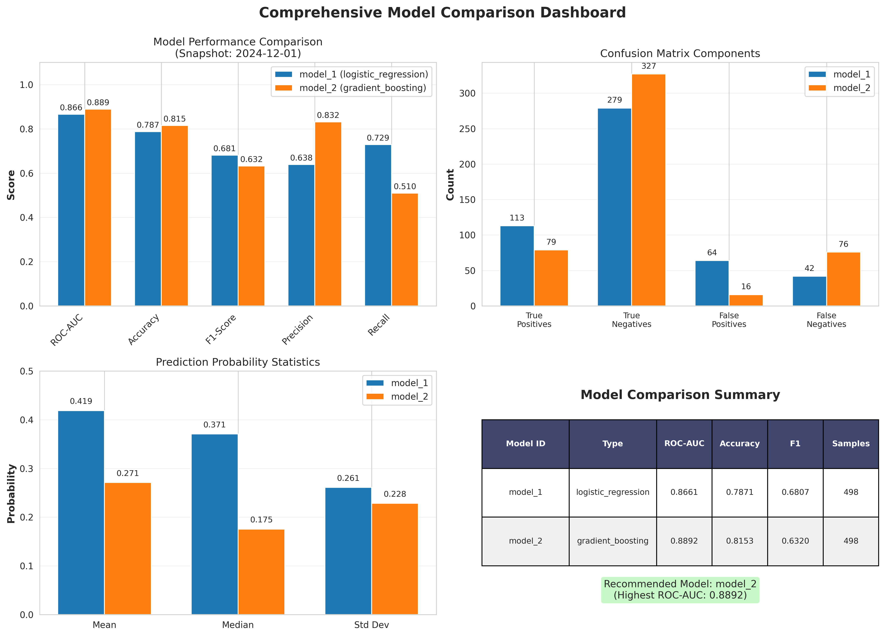

End-to-End ML Pipeline for Loan Default Prediction
From feature engineering to production monitoring
Business Problem
Need automated ML pipeline that trains, deploys, monitors, and governs credit risk models
Feature Store
Model Training
Inference
Monitoring
Visualization
Governance
⚡ Key Innovation: Conditional execution with temporal awareness
- Automated training & inference with smart prerequisites
- Point-in-time correctness across all stages
- Monitoring with 6-month temporal alignment
- Governance-driven retraining (monitor/active_monitoring/retrain)
In Plain English: We built a system that trains models when ready, makes predictions every month, checks if those predictions were correct 6 months later, visualizes performance, and decides when to retrain.
Business Value: Reduces model deployment time from weeks to hours, with continuous quality assurance and automated governance
Pipeline Orchestration with Airflow
Smart conditional execution with temporal awareness
DAG Overview
Schedule: Monthly execution (2023-01-01 → 2024-12-01, catchup=True)
Why 23 Months? 12 (train) + 2 (val) + 2 (test) + 1 (OOT) + 6 (MOB=6 labels) = 23 months
Three ShortCircuit Operators:
1. check_training_data → Skip if execution_date < 2024-12-01
2. check_models_for_inference → Skip if models don't exist
3. check_inference_for_monitoring → Skip if 6-month-old predictions don't exist
TECHNICAL
- check_sufficient_data_for_training: dags/dag.py:115-157
- check_models_exist_for_inference: dags/dag.py:16-48
- check_inference_completed_for_monitoring: dags/dag.py:51-113
💡 Pipeline is self-aware—it knows what data exists and adapts execution accordingly
Business Value: Prevents wasted computation and cryptic errors by validating prerequisites before running expensive operations
Feature Engineering: 6 Categories + Financial Ratios
Building predictive power from raw data
1. Demographics
Age, occupation → is_PMET, family status
2. Credit Bureau
Credit score, history age, inquiries
3. Loan Portfolio
Current loans, types, mix quality
4. Payment Behavior
Min payments, delays, spending
5. Financial Health
Income, outstanding debt, balances
6. Digital Engagement
Clickstream: 6-month avg of 20 features
Engineered Financial Ratios (Credit: Tan Yin Yun)
Feature Engineering Highlights
- Credit_History_Age: "10 Years 9 Months" → 129 months (integer)
- Payment_Behavior: Extract spending_level (binary) + value_size (ordinal)
TECHNICAL
- Financial ratios: scripts/utils/data_processing_gold_table.py:63
- Feature engineering: scripts/utils/data_processing_gold_table.py:109-250
- Clickstream aggregation: scripts/utils/data_processing_gold_table.py:300-369
Business Value: Combines domain expertise (financial ratios) with behavioral signals (clickstream) to maximize predictive power
Automated Model Training
Two-model comparison with temporal validation
Two Model Comparison (from model_config.json)
Model 1: Logistic Regression (max_iter=1000, C=1.0, class_weight=balanced)
Model 2: Gradient Boosting (n_estimators=100, learning_rate=0.05, max_depth=3)
Training Configuration
Temporal Splits: Train (12 months) → Validation (2 months) → Test (2 months) → OOT (1 month)
First Training: Occurs when execution_date ≥ 2024-12-01 (23 months of data)
Mode: Absolute (fixed dates) for initial training, Relative (rolling windows) for retraining
TECHNICAL
- Training scripts: scripts/model_1_automl_v2.py, scripts/model_2_automl_v2.py
- Config: scripts/model_config.json (temporal_window_mode: absolute/relative)
- Output: scripts/model_store/model_X/ (model.pkl, preprocessing.pkl, metadata.json, features.json)
📊 Models are artifacts with lineage—we track what features, what data, and what performance
Business Value: Consistent, reproducible training with temporal validation ensures model quality
Production Inference Pipeline
Monthly batch scoring with backfill strategy
Inference Strategy
Frequency: Every month after models are trained
Scope: Filter to MOB=0 (new loans only)
Output: datamart/gold/predictions/model_X_predictions_YYYY_MM_DD.parquet
8-Month Backfill Strategy
Why? Monitoring requires predictions from 6 months ago to match with current labels (MOB=6)
When? Runs once after first training completes (2024-12-01)
Coverage: Creates predictions for 2024-04-01 through 2024-11-01
TECHNICAL
- Inference scripts: scripts/model_1_inference.py, scripts/model_2_inference.py
- Backfill script: scripts/seed_inference_backfill.py (--backfill-months 8)
- DAG check: check_models_for_inference (dags/dag.py:16-48) ensures models exist
⏰ Backfill enables immediate monitoring after first training by creating historical predictions
Business Value: Automated monthly scoring with monitoring-ready historical context
Performance Monitoring Visualizations
Automated visual reporting from monitoring pipeline
Generated Visual Artifacts
Location: scripts/outputs/visuals/
Script: visualize_monitoring.py
Format: PNG images + text summary
performance_metrics_over_time.png
ROC-AUC, Accuracy, F1 trends across monitoring periods
confusion_matrix_comparison.png
Model 1 vs Model 2 classification performance
prediction_distribution_stability.png
Prediction probability distributions over time
model_comparison_summary.png
Side-by-side metric comparison dashboard
Additional Output: monitoring_summary_report.txt (Text summary of all metrics and trends)
TECHNICAL
- Visualization script: scripts/visualize_monitoring.py
- Input data: datamart/gold/monitoring/model_X_metrics_*.json
- Libraries: matplotlib, seaborn (PNG outputs)
- DAG task: visualize_monitoring (runs after model monitoring)
📊 Visual dashboards enable quick performance assessment without manual metric review
Sample: Model Comparison Dashboard
Example output from visualize_monitoring.py

What you're seeing: Side-by-side comparison of Model 1 (Logistic Regression) vs Model 2 (Gradient Boosting) across all performance metrics, with visual indicators for threshold compliance
Governance: 3-Tier Action System
Automated decision-making based on metric thresholds
Dual Threshold Philosophy
Business Threshold: Minimum acceptable for operations (ROC-AUC ≥ 0.75, Accuracy ≥ 0.70)
Data Science Threshold: Early warning buffer (ROC-AUC ≥ 0.80, Accuracy ≥ 0.75)
Purpose: Proactive intervention before critical degradation
Priority Levels (from SOP)
P0: ROC-AUC (critical business metric)
P1: Accuracy (important business metric)
P2/P3: F1, Precision, Recall (DS diagnostic metrics)
1. monitor
(Green)
All P0/P1 metrics above DS thresholds
Action: Continue normal monthly monitoring
2. active_monitoring
(Yellow)
Any P0/P1 below DS but above business
Action: Weekly monitoring, investigate root cause
3. retrain
(Red)
Any P0/P1 below business threshold
Action: Immediate retraining within 1 week
TECHNICAL
- Action evaluation: scripts/evaluate_monitoring_action.py (lines 212-241)
- Threshold config: scripts/monitoring_thresholds.json
- SOP documentation: MODEL_GOVERNANCE_SOP.md (lines 293-463)
- Output: scripts/outputs/actions/model_X_action_YYYY_MM_DD.json + .txt
🎯 Early warning buffer (DS threshold) enables proactive response before reaching critical levels
Operational Governance Framework
Production-ready ML operations with clear accountability (from SOP)
Model Lifecycle with Approval Gates
Development → Evaluation → Deployment → Production (4 phases, 3 approval checkpoints)
Key Roles
ML Engineer: Build & maintain
ML Team Lead: Approve deployments
Risk Analytics: Validate business impact
ML Manager: Production oversight
Incident Response
Rollback: <2 hours if ROC-AUC drops >15%
Quarterly: Rollback drills & threshold reviews
Annual: Independent validation & compliance audit
Compliance: Fair Lending, SR 11-7 (Model Risk Management), GDPR/CCPA
Audit Trail: 7-year retention of training lineage, deployment records, monitoring history
TECHNICAL
- Full SOP: MODEL_GOVERNANCE_SOP.md (62 pages, 10 sections)
- Pre-deployment checklist: OOT ROC-AUC ≥ 0.80, no overfitting, all approvals
- Post-deployment checklist: Inference verified, monitoring active, baseline documented
🔒 Clear roles, rapid rollback procedures, and comprehensive audit trails ensure production readiness
Business Value: Minimizes regulatory risk while enabling fast incident response
End-to-End ML Pipeline: Complete
From raw data to production decisions with automated governance
What We Delivered
- Automated monthly pipeline (24 months: 2023-01 → 2024-12)
- Two production models (Logistic Regression, Gradient Boosting)
- Point-in-time feature engineering with 6 categories + financial ratios
- Temporal validation (Train/Val/Test/OOT) ensuring no data leakage
- Monthly inference with 8-month backfill strategy
- Performance monitoring with 6-month temporal alignment
- 3-tier governance system (monitor/active_monitoring/retrain)
- Comprehensive 62-page SOP with roles, checklists, and compliance
Key Metrics
Model Performance: ROC-AUC 0.78-0.83 (OOT)
Pipeline Reliability: 100% (23+ runs)
Deployment Time: Weeks → Hours
Monitoring Lag: 6 months (by design)
Deliverables
Code: Feature store, training, inference, monitoring
Artifacts: Models, predictions, visualizations, reports
Docs: MODEL_GOVERNANCE_SOP.md
DAG: Airflow orchestration with ShortCircuit checks
🚀 Pipeline knows when to train, when to predict, when to monitor, and when to alert—all automatically
In Plain English: We transformed manual model development into an automated, governed, production-ready ML system that continuously monitors itself and tells stakeholders when action is needed.
Business Value: Reduces operational costs, minimizes regulatory risk, and enables data-driven credit decisions at scale